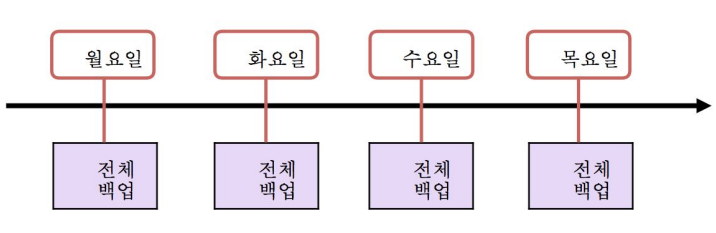

백업과 복원
백업 및 복원 전략
-
실제 운영 서버에서 백업 및 복원 전략을 어떻게 구성하냐에 따라 장애 발생 시, 잘 대처할 수 있음
-
백업 및 복원 전략에 대해 알아보자.
백업 전략과 복원 관계
-
전체 백업만 하는 경우

트랜잭션 로그가 계속 증가해서 디스크 Full 이 발생할 수 있음
-
전체 백업 + 차등 백업 전략
-
전체 + 차등 + 로그 백업 전략
데이터베이스 크기가 커서 전체 백업을 자주 받을 수 없는 경우 장점을 가짐
처음으로
이전
다음